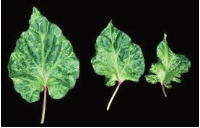
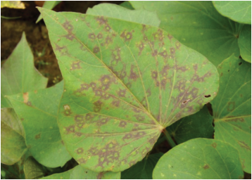
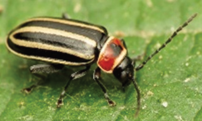
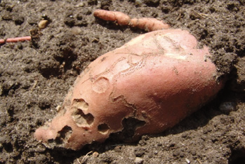

Figure 4.6: (a) Adult flea beetle
Sources:
https://extension.usu.edu/vegetableguide/
potato/flea-beetles

Figure 4.6 (b) sweet potato affected
with a larva of flea beetle
Sources: https://www.ipmimages.org/
browse/detail.cfm?imgnum=5605714
Viral diseases
Sweet potatoes are affected by viral diseases such as Sweet potato mild mottle
virus (SPMMV) (Figure 4.7 (a)) and Sweet potato feathery mottle virus (SPFMV)
(Figure 4.7 (b). These diseases are mainly transmitted from infected to uninfected
plants through vectors and planting materials.
Figure 4.7 (a): Sweet potato mild
mottle virus symptoms
on leaves

Figure 4.7 (b): Sweet potato feathery
mottle virus symptoms
on leaves
Source: https://www.cabidigitallibrary.org/doi/abs/10.1079/cabicompendium.51028